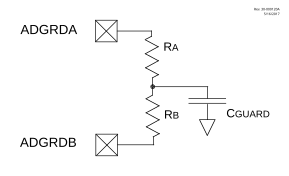

Figure 43-9 shows a typical guard ring circuit. CGUARD represents the capacitance of the guard ring trace placed on the PCB. The user selects values for RA and RB that will create a voltage profile on CGUARD, which will match the selected acquisition channel.
The ADC has two guard ring drive outputs, ADGRDA and ADGRDB. These outputs are routed through PPS controls to I/O pins. Refer to the “PPS - Peripheral Pin Select Module” chapter for more details. The polarity of these outputs is controlled by the GPOL and IPEN bits.
At the start of the first precharge stage, both outputs are set to match the GPOL bit. Once the acquisition stage begins, ADGRDA changes polarity, while ADGRDB remains unchanged. When performing a double sample conversion, setting the IPEN bit causes both guard ring outputs to transition to the opposite polarity of GPOL at the start of the second precharge stage, and ADGRDA toggles again for the second acquisition. For more information on the timing of the guard ring output, refer to Figure 43-10.
